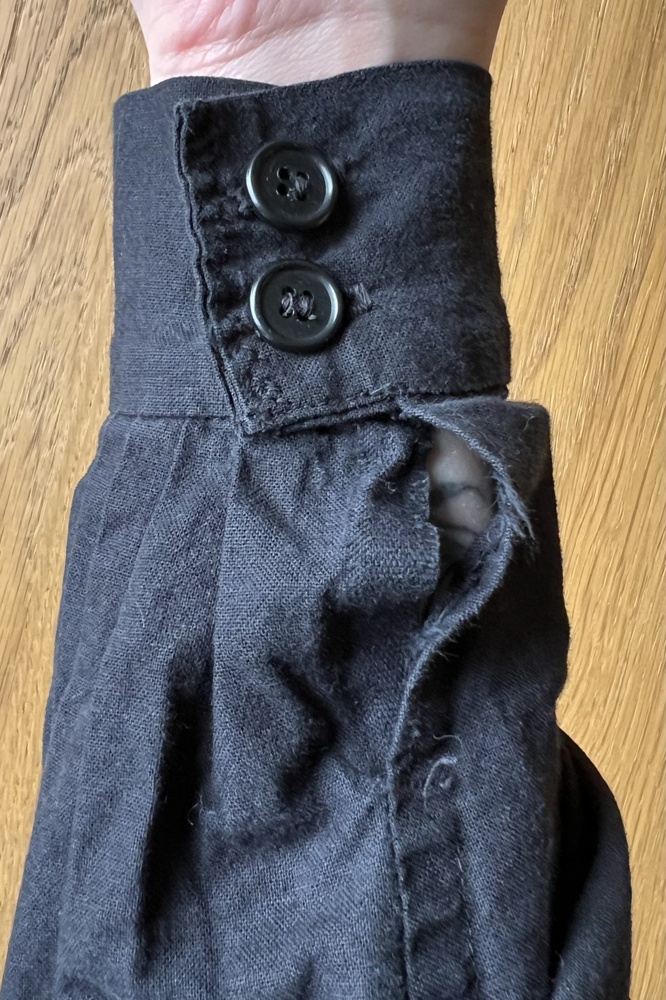
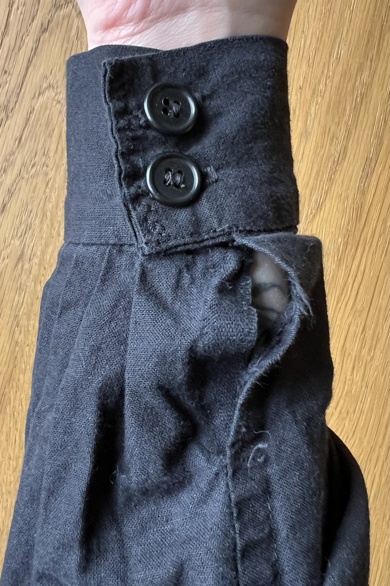
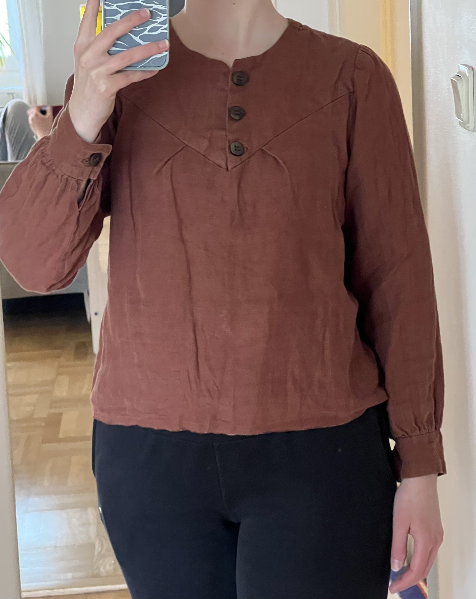
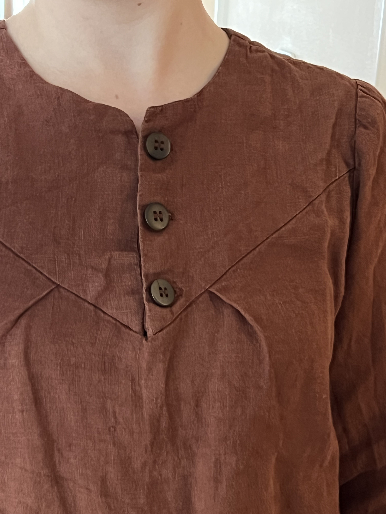
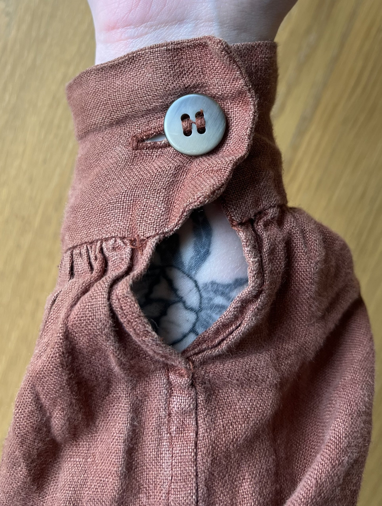
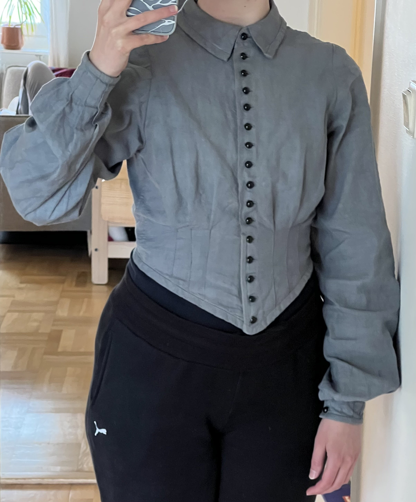
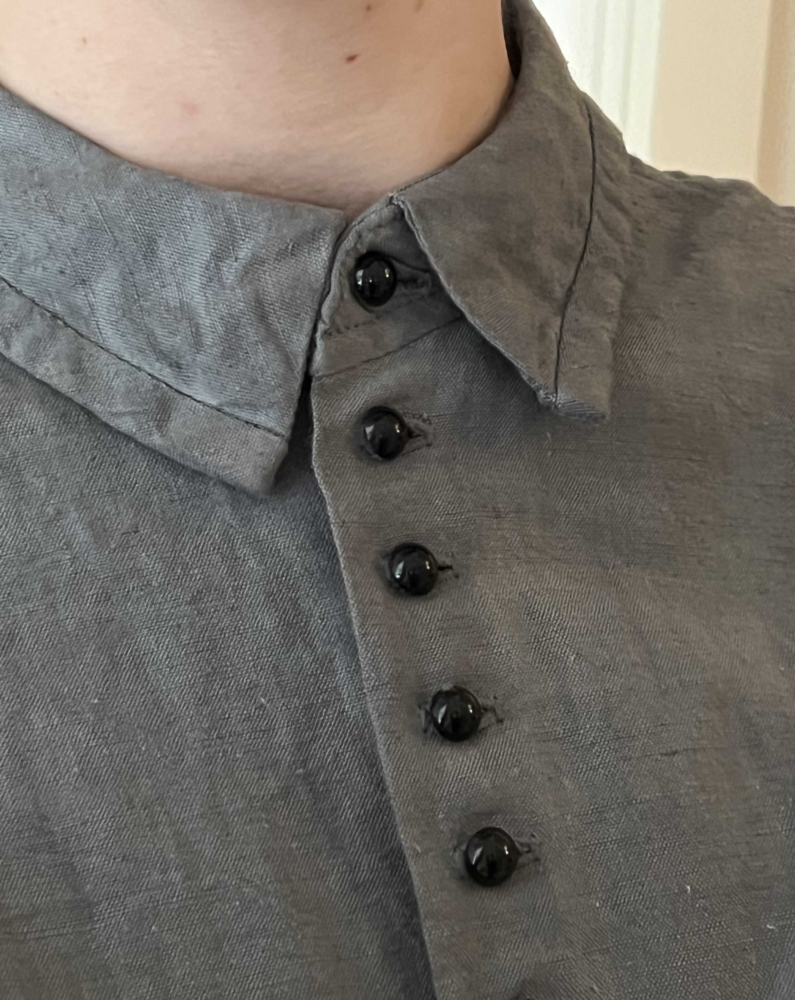
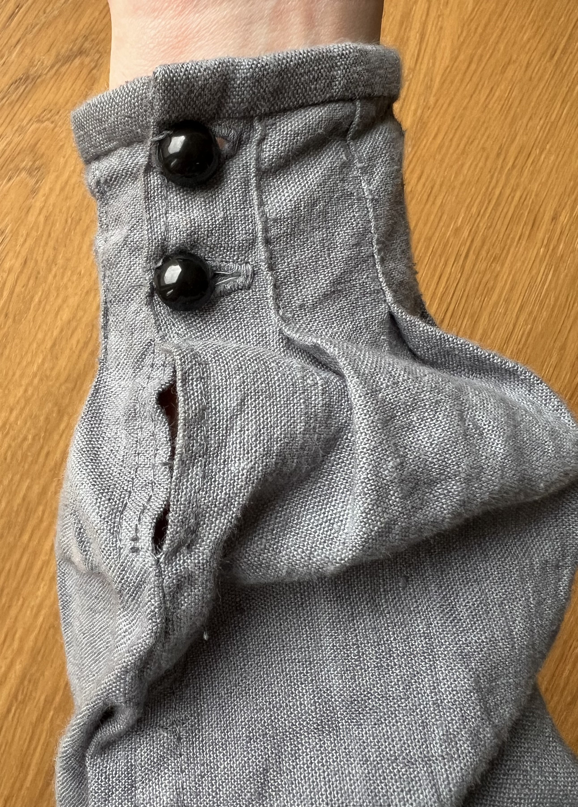

Black pinstripe Shirt
I drafted a shirt pattern with shoulder pieces that make a downward-pointed shape on the back and front, where the shape has a button (or hook and eye) closure. This is my go-to shirt pattern that I have made several times.
Black cotton shirt with hook and eye neck closure and buttoned cuffs. Symmetrical pinstripes in the frond and one pleat on each side in the back.
 

Orange Shirt
Orange linen shirt, with two pleats in the front (asymmetrical because I can't count) and two in the back. Button closure on the neck, and same buttons on the cuffs.
  Grey Collared Shirt
This shirt is made from an old linen tablecloth that I dyed in the second dye bath of a black dye, resulting in this light grey color. The point has one piece of boning (6mm cable tie) next to the buttonholes.
  